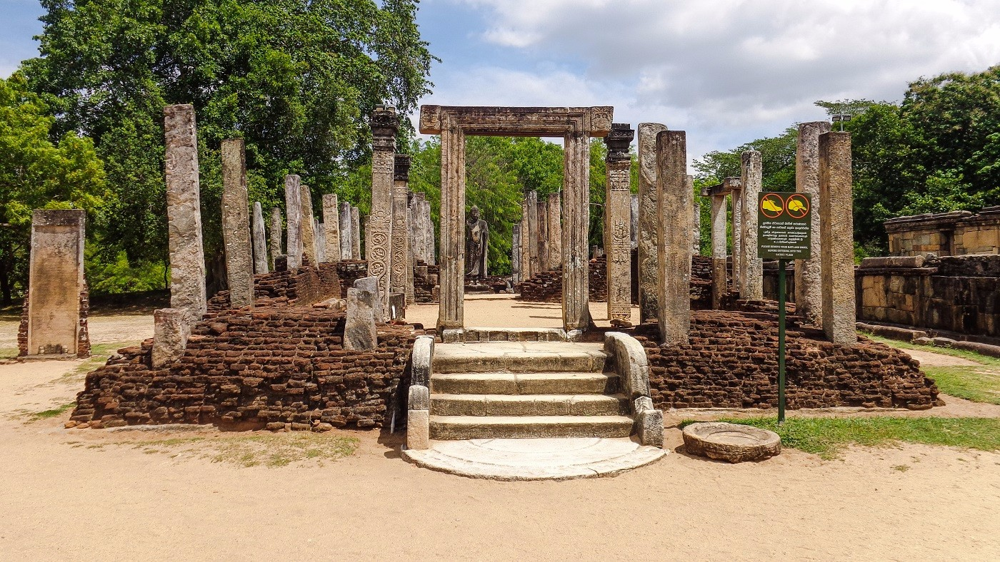

Atadage
Atadage Dalada Maligaya is the house of the tooth relic of Buddha built by King Vijayabahu I (1070-1110). This building is built on 54 stone pillars. The tooth relic has been kept on the second floor probably made out of wood. The access to the second floor is through a granite stair case. Few steps still remains of this staircase which led to the upper chamber of the building. There has been three Buddha statues at the bottom and only the center one remain today. Also this is thought to be the only surviving building of the king Vijayabahu I. “Ata” in Atadage means eight. In this case this building would have been called by this name probably because of it housed eight relics including the main tooth relic or because it was completed in eight days. It is possible that this was built in eight days as there are indications that this building has used parts of other buildings in Anuradhapura era. The moonstone is a good example. This has been brought from Anuradhapura to be placed here. The “Velikkara” inscription stone on the left to this building is of significance. This is written in tamil language and explains that the protection of the tooth relic was done by a hired tamil army and not by the Sinhalese. Today what remains here is the foundation and the stone pillars
